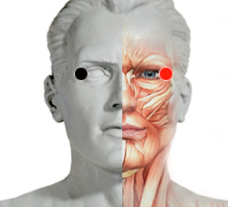

Asperjillus (Niger)
Pares
canto del ojo - canto del ojo
mediastino - pericardio

Generalidades:
Puede generar Glaucoma y cataratas si se asocia al Virus del Sarampión. Combinado con otros, puede producir enfermedades oftálmicas peligrosas: Mácula mono o bilateral = ceguera definitiva asociado a los virus Rubéola y Sinusitis, se torna más peligroso y dificil de tratar. Genera Aflatoxina B que es Cancerígena.